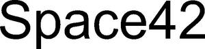

Trade Mark Journal No.2025/020 16 May 2025
WO0000001838819 (9,12,38,39,42)
Office of origin: United Arab Emirates
Date of International Registration:22 July 2024
Date of designation in the UK:
22 July 2024

Space42 written in Latin characters.
International priority date claimed: 22 January 2024
(United Arab Emirates)
International priority date claimed: 22 January 2024
(United Arab Emirates)
International priority date claimed: 22 January 2024
(United Arab Emirates)
International priority date claimed: 22 January 2024
(United Arab Emirates)
International priority date claimed: 22 January 2024
(United Arab Emirates)
- Class 9
- Scientific, navigational and surveying apparatus and instruments, photographic and cinematographic apparatus and instruments, optical apparatus and instruments, weighing, measuring, signaling, surveillance (supervision), rescue and teaching apparatus and instruments; devices and instruments for connecting, opening, transforming, condensing, regulating or controlling electrical energy; devices for recording, transmitting or copying sound or images; magnetic data holders, recording discs; CDs; DVDs and other digital recording media; mechanisms for coin-operated devices; cash registers, calculators, data processing equipment, computers; computer programs; fire extinguishers; 3D scanners; 3D glasses; counters; accelerometers; accumulators, electrical; acid hydrometers (acid density measuring devices); battery acid meters; audio alarms; audio delivery channels; audio couplers; actinometers (devices for measuring radiation intensity); data collection apparatus; antennas; air density measuring devices; air analyzers; airbags for safety purposes to prevent falls; alarm bells, electric; alarms; alcohol measuring devices; cartographic or cadastral monitoring and surveying devices; height measuring devices; electric current measuring devices; subwoofers; servo motor amplifiers; inflating tubes being life saving apparatus; wind speed measuring devices; animal signaling devices to guide livestock; animation; anode batteries/high tension batteries; anodes; automated answering machines; anti-glare glasses; anti-interference devices [electrical]; anti-theft alarms; negative electrode for laboratory research; equipment for producing X-rays, for purposes other than medical purposes; devices and instruments for astronomical purposes; apparatus and instruments for the physical sciences; devices for changing record player needles; motion picture editing equipment; gas generating devices for calibration purposes; devices for measuring the thickness of leather; apparatus for testing lactation milk, other than those for medical or veterinary use; devices for examining postal stamps; instruments for measuring the thickness of tanned leather; armators [electricity]; asbestos clothing for fire protection; asbestos gloves for accident prevention; asbestos shields for firefighting; sound processing devices; audio mixers; audio and video receivers; audio-visual educational devices; automated teller machines [ATM]; automatic indicators to indicate low pressure in vehicle tires; automated navigation systems for ships; azimuthal instruments; infant monitors; scales used to measure infant weight; bags for laptops; weighing scales (TIG scales) / arm scales (TIG scales); scales (arm scales); balance devices; barcode readers (vertical codes); atmospheric pressure measuring devices; bathroom scale; batteries for electronic cigarettes; batteries, electric; battery chargers; battery boxes/accumulator boxes; illuminated beacons; bells [alarms]; betatron devices; binocular microscopes; biochips; identification cards measuring vital signs; biometric locks which work by measuring vital signs; passports with vital signs data/electronic passes; bioreactors for cell culture for scientific research; bioreactors for laboratory use; black boxes [data loggers]; devices for printing blueprints and designs; body equipment to assist in lifting loads; boiler monitoring tools; branch boxes [electricity]; breath analysis devices; breathing apparatus for underwater swimming; breathing apparatus, not for medical purposes; bulletproof clothing; bullet proof suits/bulletproof waistcoats; buzzers; speaker cabinets; electrical cables; calculators; calibration rings; calipers; calorimeters; video cameras; cameras [for photography]; capillary tubes for laboratory use; carpenters' rulers; blackout plate holders [for photography]; specially made cases for photographic equipment and tools; cases for smartphones; smartphone cases that include a keyboard; cash registers; cassette tape players; cathodes; cathodic anti-corrosion devices; mobile phone mounting straps; [electrical] cell switches; reducers [electricity]; central fixing devices for photographic transparencies; chargers for electric batteries; chargers for electronic cigarettes; charging stations for electric vehicles; chemical apparatus and instruments; chips (integrated circuits); choke coils (impedance); chromatographs for laboratory use; chronographs [time recording devices]; cinematography cameras; cinema films, exposed; circuit breakers; cleaning devices for phonograph records/cleaning devices for audio recording discs; digital thermostat for weather monitoring; telephoto lenses; laboratory clothing; clothing for accident, radiation and fire protection; fire resistant clothing/fire protection clothing; coaxial cables; electrical wire coils; disaster protective headgear; coin-operated mechanisms for television sets; electrical assemblies; power transformers; CD players; CDs (audio-video); CD-ROM (read-only memory); comparison circuits; compasses for measurement; downloadable computer gaming software; registered computer gaming software; computer hardware; keyboards for computers; computer memory devices; routers for computer networks; registered computer drivers; computer peripherals; computer software, downloadable; registered computer programs; recorded or downloadable computer screensaver software; downloadable computer software applications; computer software platforms, registered or downloadable; computer software, registered; computers; capacitors; electrical connectors; measuring bracelets [measuring tools]; connections to power lines; connections [electricity]; contact lens cases, with ultrasonic cleaning features; contact lenses; electrical wires; contact lens cases; microscope slide cases; control panels [electricity]; control devices for servo motors; electrical transformers; cooling pads for laptops; insulated copper wires; optical correction lenses [optics]; global positioning system apparatus; counterfeit currency detectors; counters/gauges; couplers [data processing equipment]; electrical couplers; electrical connections; covers for electrical outlets; PDA covers; smartphone covers; tablet PC covers; covers for tablets; crash test dummies; terminals for use with credit cards; [laboratory] crucibles / [laboratory] crucibles; cryptocurrency wallets; power rectifiers; cyclotrons (cyclotrons); darkroom lights [for photography]; darkrooms [for photography]; dedicated bases for holding mobile phones and smartphones; data gloves; data processing devices; recorded or downloadable data; decompression chambers; decorative magnets; degaussing devices for magnetic tapes; density measuring devices, for non-medical purposes; monitoring devices; virtual keyboard projectors; diagnostic devices, for use in research laboratories; diagnostic devices, for non-medical purposes; acoustic membranes; films [for photography]; membranes for scientific instruments; dictation machines; diffraction instruments [microscopes]; digital image projectors; digital signage; digital weather stations; directional compasses; electrical discharge tubes other than those for lighting/electrical discharge tubes other than those for lighting; disc drives for computers; disks, magnetic; distance measuring devices; distance recording devices/distance recording devices; distillation apparatus for scientific purposes; [electrical] distribution boards; distribution boxes [electrical]; distribution cabinets [electrical]; diving masks; masks for divers; diving suits; dna chips; dog whistles; dosing dispensers, for non-medical use [measuring devices]; dosing dispensers; downloadable application software for virtual environments; downloadable computer software for minting non-fungible tokens; downloadable software for managing digital asset transactions using blockchain technology; downloadable crypto keys for receiving and sending crypto assets; downloadable digital image files authenticated by non-fungible tokens (NFTs); downloadable digital music files authenticated by non-fungible tokens (NFTs); downloadable e-wallets; downloadable codes for mobile phones; downloadable graphics for mobile phones; downloadable image files; downloadable music files; downloadable ringtones for mobile phones; downloadable virtual clothing; banks for photographic use/racks for photographic use; gauges for tailors; dry suits; drying equipment for photographic prints; drying racks for photography; [electricity] pipes; dust masks include an air filter; dust measuring devices; various digital disc players; kinetic measurement apparatus; mounts for mobile phones; earplugs for divers; earbuds for remote communication; effects modules for guitar; egg settling timers/hourglasses; egg checking apparatus; electric actuators; electrical and electronic effects modules for musical instruments; electrical data processing appliances; electric doorbells; electrical equipment for remote control of industrial processes; electric linear actuators; electrical loss indicators; electrical plugs; electrical sockets; electrical wires for vehicles; electrical adapters; pipes for electrical connections; electrically conductive fences; electrically conductive rods for mounting spotlights; electrodynamic devices for remote control of railway points; electrodynamic devices for remote control of signals; electrolytic devices for laboratory use; electromagnetic coils; electronic access control systems for telescopic doors; electronic agendas; e-book readers; electronic collars for animal training; electronic controlling devices for servo motors; interactive electronic whiteboards; electronic bulletin boards; electronic screens; electronic pens [visual display units]; small electronic devices for translation; electronic publications (downloadable); downloadable electronic music; electronic ID cards; magnetic identification bracelets, encrypted; encrypted key cards; encrypted magnetic cards; enlargement devices [for photography]; equalizers (audio devices); equalizers (audio instruments); energy measuring devices; exposure time measuring devices [intensity measuring devices]; fax machines; fermenters for laboratory use; fiber optic cables/fiber optic cables; film cutting devices; movies, downloadable; UV filters for photography; filters for use in photography; toroidal scale maps; fire alarms; fire protection blankets; fire engines; rescue ladders in case of fire; fire pumps; fire extinguishing equipment; flashlights for smartphones; flashlights [for photography]; flashlights [illuminated signs]; floppy disks; flow meters; fluorescent screens; fog warning signs, non-explosive; foldable smartphones; food component analysis devices; frames for photographic transparencies; frequency transmitters; frequency measuring devices; ovens for laboratory use; laboratory furniture; fuse wires; fuses; galena crystals [detectors]; galvanic batteries; galvanic cells; galvanometers; gas testing instruments; gas measuring devices [measuring devices]; measuring meters; gimbals; gimbals for digital cameras for smartphones; polishing (glazing) devices for photographs; GPS devices; gloves for divers; gloves for accident prevention; gloves for protection from X-rays for industrial purposes; protective glasses for sports uses; grids for batteries; training tools for hairdressers [educational devices]; portable electronic dictionaries; headset sets for telephones; recorder head cleaning tapes [recording]; head protection equipment for sports; head-mounted displays; vehicle display devices; headphones; headphones for playing video games; height measuring instruments; heliographic devices; clothing hem ruler or measure; high frequency devices; dedicated holders for mobile phones and smartphones; electrical wire holders; 3D drawings; holographic displays; home automation consoles; horns for loudspeakers; humanoid robots with communication and learning functions to assist and entertain people; artificial intelligence robots for preparing drinks; robots equipped with artificial intelligence for use in scientific research; density measuring devices; atmospheric humidity measuring devices; magnetic ID cards; electric ignition devices for remote ignition; ignition batteries; car phone bases; incubators for culturing bacteria; induction coils [electricity]; infrared monitoring devices; ink cartridges, unfilled, for printers and copiers; insulating gloves to protect against accidents; integrated circuit cards [smart cards] / smart cards [integrated circuit cards]; integrated circuits; touch screen interactive terminals; intercoms; computer hardware interfaces; cooling fans for computers; inverters [electricity]; billing machines; ionization devices, not for water or air treatment; downloadable publications containing instructions for using musical instruments; joysticks for use with computers, other than those for video games; tone boxes for computers; musical juke boxes; juke boxes operated by coins; junction boxes [electrical]; connection jackets for electrical cables; knee pads for workers; graded glass tubes for laboratories; centrifugal separators for laboratories; laboratory pipettes; laboratory robotics devices; laboratory trays; milk density measuring devices; devices for measuring the specific gravity of coffee; cell phone straps; laptops, personal computers; laser devices, for non-medical purposes; lens hoods; lenses for astrophotography; letter scales; leveling tools; levels [horizontal line selection tools]; rescue belts; life buoys; life jackets; rescue devices and equipment; life saving capsules for natural disasters; electrical means of dimming [regulators]; light emitting diodes [LED]; LED electronic indicators; lighting ballasts; lightning rods; [electrical] limiters; locks, electric; recorders [measuring instruments]; amplifiers; magic lanterns; magnetic data media; magnetic encoders; magnetic resonance imaging [MRI] machines, not for medical use; magnetic tape units for computers; magnetic tapes; magnetized wires; magnets; magnifying glasses [optics]; marine depth finding devices; tag buoys; rules and levels for carpentry; masts for radio antennas; material inspection tools and machines; materials used for main electrical wiring (wires, cables); tablets for engineering drawing; measures; measuring devices; settlement signs [survey tools]; measuring equipment, electrical; measuring tools; measuring spoons; automated signals; device mechanisms operated by coins; mechanisms of devices operated by the counter; audio amplifiers; memory cards for video game machines; mercury leveling scales; metal detectors for industrial or military purposes; meteorological balloons; meteorological instruments; metronomes; micrometer screws for optical instruments; micrometers (precision measuring devices); sound amplifiers; microprocessors; microscopes (microscopes); vehicle mileage recording devices; [optical] mirrors; inspection mirrors; missile warning systems; mobile phone chargers; ring holders for mobile phones; screensavers for mobile phones; mobile phones/cell phones/cell phones; modems; cash counting and sorting machines; measuring devices, other than those for medical purposes; monitors [computer hardware]; monitoring software [computer software]; camera mounting brackets; clothing for motorcyclists to protect against accidents or injury; mouse [computer peripherals]; mice for computers; mouthguards for sports; digital musical instrument controls representing audio interfaces; nanoparticle analyzers; navigational devices and tools; marine navigational signaling devices; vehicle navigation devices [onboard computers]; needles for record players; needles for surveying compasses; fire protection nets; nasal clips for divers and swimmers; small personal computers; objective lenses [optical]; monitoring tools; electronic price tags; resistance measuring devices; optical devices and instruments; optical character readers; optical capacitors; optical data storage media; optical discs; optical fibers [conductive filaments]/optical lanterns/optical lamps; optical lenses; organic light-emitting diodes [OLEDs]; oscillographs [oscilloscopes]; oxygen transvasing devices; ozone generators for calibration purposes/ozone generators for calibration purposes; ring locks, electronic; vehicle parking meters; parking sensors for vehicles; particle accelerators; pedometers; observation holes [magnifying glasses] for doors; periscopes [invisible observation scopes]; PDAs; personal digital assistants; personal stereo recording devices; Petri dishes for culture; gasoline meters; phonograph recorders/sound recording discs; optical copiers [photographic, electrostatic, thermal]; photometers (optical measuring devices); telegraphic image transmitters; photovoltaic cells; piezoelectric sensors; pitot tubes; plane survey boards [scanning tools]; surface measuring devices; battery plates; digital graphic scanners; pocket calculators; point of sale terminals; polarimeter; portable document scanners; portable media players; portable emergency chargers; portable speakers; ultra-fine, portable dust meters; precision balances; precision measuring devices; pressure gauges; pressure indicator plugs for valves; pressure indicators; pressure measuring devices; printed circuit boards; printed circuits; printers used with computers; prisms (optics); probes for scientific purposes; processors [central processing units]/central processing units [processors]; processors [central processing units]; projectors; screens; X-ray protective devices for non-medical purposes; accident protective devices for personal use; protective face masks, for workers; protective cases for computer screens; protective covers for smartphones; protective helmets; protective helmets for sports; protective masks, for non-medical purposes; protective suits for pilots; protractors [measuring instruments]; office machines for punched cards; snap buttons for bells; pyrometers (devices for measuring high temperatures); quantitative indicators; quantum computers; quantum light-emitting diodes [GLEDs]; radar devices; radio pagers; radiation detectors for industrial purposes; radiographic displays for industrial purposes; radio equipment; wireless telegraphy devices; wireless telephone sets; safety devices for railway traffic; rangefinders/telemetry devices; readers [data processing equipment]; vehicle rear view cameras; record players; reflective products to wear, to protect against accidents; reflective safety vests; refractive index measuring devices; refracting telescopes; regulating devices, electrical; relays, electrical; remote controls; rescue flares, non-explosive, other than fireworks; laser beacons, for rescue; resistors, electrical; respirators for air filtration, for non-medical purposes; respiratory masks, for non-medical purposes; resuscitation statues [educational devices]; simulator training devices for practicing resuscitation and resuscitation techniques; distillation vessels; stands for distillation vessels; lap counters; rheostats; riding helmets; toroidal sizing measures or analyzers; road signs, illuminated or mechanical; rods for underwater explorers; rulers [measuring tools]; glucose level measuring devices; rescue nets/survival nets; safety restraints, other than those used for vehicle seats and athletic equipment; illuminated signs; safety tarpaulins; salinity measuring devices; satellite rangefinders; satellite navigation devices; satellites for scientific purposes; scales; scales equipped with body mass analysis methods; scanning devices for diagnosing vehicle problems; scanners for data processing; monitors [for photography]; screens for photogravure; internal thread gauges; robots for security surveillance; security codes (coding devices); payment terminals; lenses for taking selfies; light rings for smartphone selfies; selfie sticks for phones (handheld monopods); semiconductors; instruments for measuring the height of flying objects; sheaths for electrical cables; shoes to protect against accidents, radiation and fires; shutter releases [for photography]; camera shutter [for photography]; aiming telescopes for firearms; signal bells; signal lanterns; signaling buoys; signaling panels, illuminated or mechanical; signal whistles; signs, illuminated or mechanical; signs, illuminated; simulators for steering and controlling vehicles; portfolio covers for laptops; sliding gauge calipers; light projection devices for slide shows; sliding ruler; smart rings; smart headphones; smart glasses; smart phones; smart watches; smoke detectors; underwater breathing apparatus; downloadable SAMD medical device software; solar batteries; solar panels to produce electricity; welding helmets; solenoid operated valves [electromagnetic switches]; echo sounders; sound source identification equipment; audio recording devices; data carriers for sound recording; audio recording tapes; audio transcription devices; audio transmitters; depth sounding instruments; lead weights for sounding strings; sounding threads; sounding missiles (tests); spark protectors; speech tubes; cases for eyeglasses; chains for eyeglasses; cords for eyeglasses; eyeglasses frames; lenses for eye glasses; eye glasses; eye glasses to correct vision defects (color blindness); spectrographs; spectroscopes (spectral detectors); speed inspection devices for vehicles; speed indicators; accelerometers [for photography]; speed regulators for record players; lens curvature measuring devices; alcohol leveling balances; reels [for photography]; whistles for sports; fire prevention atomizer systems; right-angled rulers for measuring; angle rulers for measuring; stage lighting regulators; customized stands for personal laptops; position sensors for photographic equipment; holders for fixing photographic apparatus in position; engine starter cables; steering devices, automatic, for vehicles; crane transformers; stereoscopes (stereoscopes); stereoscopic devices; distillation units for laboratory experiments; rotation and frequency measuring instruments; low frequency amplifiers; sulfite measuring devices; sun glasses; pet sunglasses; surveying devices and tools; strings for measurement of space; surveying equipment; surveyors' scales; rescue blankets; electrical switchboards; [electrical] switch boxes; switches, electrical; T rulers for measuring; tablet computers; angular velocity measuring devices; tape recorders; meters for cars; educational devices; educational robotics devices; dental guards; communications devices in the form of jewelry; telegraph wires; telegraphs [devices]; telephone sets; telephone receivers; telephone transmitters; telephone wires; interactive user-programmable humanoid robots; remote printer/typewriter devices; remote prompters; remote circuit breaker; telescope binoculars; telescopic sights for firearms; televisions; temperature indicator stickers for non-medical purposes; temperature indicators; [electrical] terminals; test tubes; testing devices not for medical purposes; theft prevention equipment, electrical; theodolites (devices for measuring angles); thermal imaging cameras; thermoelectric solenoid valves/photoelectric tubes; humidity and temperature measuring devices; temperature measuring devices, for non-medical purposes; thermostats; thermostats for vehicles; computer networking devices; thin, high-performance headphones; counters; electronic terminals for ticket distribution; ticket printers; clocks recording time of arrival and departure (time recording devices); time recording devices; automatic time switches; audio joysticks for record playback devices; dry ink cartridges, unfilled, for printers and copiers; aggregate adding machines; trackballs [devices attached to computers]; traffic cones; traffic signal devices (signaling devices); electrical transformers; transistors [electronic]; transmitters [for long-distance communications]; electronic signaling devices; transmitters [for long-range communications]; slides [for photography]; transmitters and receivers; three-valve vacuum tubes; tripods for cameras; ultrasound imaging devices for non-medical purposes; urine density measuring devices; flash drivers for usb flash drives; robots equipped with human characteristics, capable of being programmed by a user, but not specifically designed; discharge measurement meters; vacuum tubes (wireless); magnetic heterogeneity measuring devices; warning triangles when vehicles break down; vehicle radios; verniers [ultra-precision gauges]; video devices for monitoring infants; videotapes; video game storage cassettes; video mixing discs; video projectors; video recorders; video screens; phones with video calling feature; photographic cameras; VR controllers; VR headsets; viscometers; front tips for helmets; voltage regulators for vehicles; protective devices against sudden changes in voltages; voltage measuring devices; voting machines; integrated circuit chips; sound effect units; cordless phones; illuminated warning signs; wash basins [for photography]; water level indicators; wavelength measuring devices; activity trackers, wearables; wearable computers; wearable headphones; wearable displays; computer network bridges; weighing, measuring devices and instruments; weighing machines; weight belts for divers; weights; wet suits; wheel alignment measuring devices; sirens; wind cones to show wind direction; [electrical] wire connectors; portable wireless printers for use with laptops and mobile phones; wireless microphones; wiring, electrical; wrist rests for use with computers; X-ray films, exposed to light; X-rays, other than those for medical purposes; X-ray tubes, for non-medical uses; fax machines; none of the aforementioned goods being used in connection with training and education services in the field of coding and computer programming.
- Class 12
- Vehicles; land, air or water transportation devices; aviation apparatus, machinery and equipment; planes; aerial vehicles; off-road vehicles; armored vehicles; vehicle frames; self-driving cars; autonomous land vehicles; bodies for vehicles; cars/carts/motorized vehicles; electric vehicles; engines for land vehicles/engines for land vehicles; hydrogen fueled cars; military drones; military vehicles for transport; steam buses; electric motors for land vehicles; remotely controlled vehicles, other than toys; self-driving robots for delivery; space ships; vehicle structures; rescue boats.
- Class 38
- Communications; cable television broadcasting; communications via mobile phones; communications via computer terminals; communications via fiber optic networks; communications by telegraph; communications by telephone; sending of messages and pictures using the computer; electronic bulletin board services [telecommunications services]; location services [telecommunications services]; wired and wireless telecommunications services; sending messages; news agency services; paging services (by radio, telephone or other electronic means of communication); providing access to blockchain networks; providing access to databases; providing chat rooms in virtual settings; providing information in the field of telecommunications; providing online chat rooms; providing online forums; providing forums based on virtual reality technology; providing communication channels for telephone shopping services; providing communications links to a global computer network; providing user access to a global computer network; radio broadcast; wireless communications; leasing access time to global computer networks; leasing of fax machines; rental of messaging equipment; modem rental; smartphone rental; telecommunications equipment rental; telephone rental; satellite broadcasting; sending and receiving data; communications routing and connectivity services; telecommunications contract services; telegraph services; telephone services; television broadcast; telex services; transmission of digital files; send an email; send greeting cards online; streaming podcasts (online recordings); telegram sending; video-on-demand streaming services; group video calling services; voice mail services; wireless transmission.
- Class 39
- Transport; packaging and storage of goods; travel arrangement; air transport; transportation by armored cars/transportation by armored vehicles; services for organizing passenger transportation for others via an online application; transportation by bus; vehicle parking services; car rental; ride-sharing services for vehicles; vehicle rental services; transportation by wagons; services to provide a driver for the vehicle; car parking rental; launching satellites for others; shipping; passenger transportation; physical storage of electronically stored data or documents; civil aircraft traffic direction command; providing traffic information; navigation systems rental; security aircraft rental; renting unmanned vehicles for surveillance; warehouse rental; transfer by taxi; transportation logistics; vehicle rental.
- Class 42
- Scientific and technical services and related research and design services; industrial analysis and research services; computer hardware and software design and development services; conducting of analyses for oil exploration; providing artificial intelligence related consulting; mapping or thermographic measurement services by unmanned vehicles; chemical analysis; preparing chemical research; computer-aided graphic design for video presentation; computer programming; computer programming of smart contracts on the blockchain network; computer programming services for data processing; providing computer security consulting; providing consultations related to computer software; computer systems analysis; computer system design; providing consultations related to computer technology; preparing technical project studies; providing consultations related to the design and development of hardware computer equipment; providing consultations related to the field of energy saving; conversion of computer programs and computer data, other than physical conversion; converting data or documents from physical to electronic media; creating and designing website-based indexes for third party information [it services]; data encryption services; providing data security consulting; designing computer simulation models; prototyping design; development of computer platforms; geometric design; preparing geological research; preparing geological surveys; industrial design; IT support services [finding and fixing software problems]; provision of online non-downloadable computer software; providing internet security consulting; preparing land surveys; providing information about weather conditions; remotely monitor the operation of computer operating systems; monitoring systems; monitoring of computer systems for detecting unauthorized access attempts or data breaches; preparing surveys in the oil field; platform as a service [PaaS]; providing geographic information; providing information related to computer technology and programming via a website; providing non-downloadable geographic maps online; providing computer software online that cannot be downloaded; providing information, advice and scientific consultations related to reducing carbon emissions; providing virtual computer systems via cloud computing; quality control; quantum computing; software rental, computer software rental; data center leasing; renting robots with human characteristics that the user can program; research and develop new products for the benefit of others; research in the field of artificial intelligence technology; preparing research in the field of communications technology; scientific and technological research in the field of natural disasters; scientific researches; scientific research in the field of environmental protection; software as a service [SaaS]; software development within a framework related to software deployment; software design services for data processing; providing technical information relating to computers through guides and brochures; providing technological consultations; technology consulting services for digital transformation; technological research; providing consultations related to telecommunications network security; providing consultations related to communications technology; urban planning; conducting underwater exploration operations; user data authentication services using single sign-on technology for online software applications; water analysis; editing computer codes; none of the aforementioned services being used in connection with training and education services in the field of coding and computer programming.
BAYANAT INVESTMENTS LTD
Representative: Gowling WLG IP LLC, Office number 05,, Rabi'a Mohammad Noor Abedallah Bardesi Proprietorship, Bur Dubai, Business Bay, UNITED ARAB EMIRATES